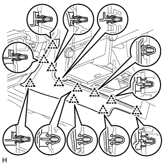
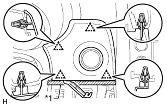
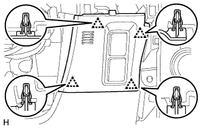
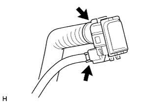

ROOM TEMPERATURE SENSOR (for Front Side) > REMOVAL |
| 1. REMOVE INSTRUMENT PANEL FINISH PANEL END LH |
|  |
Detach the 11 clips and remove the instrument panel finish panel end.
| 2. REMOVE NO. 1 INSTRUMENT PANEL FINISH CUSHION |
|  |
Put protective tape around the No. 1 instrument panel finish cushion.
| *1 | Protective Tape |
Using a moulding remover, detach the 4 clips.
Disconnect the connector and remove the No. 1 instrument panel finish cushion.
| 3. REMOVE LOWER INSTRUMENT PANEL FINISH PANEL ASSEMBLY |
|  |
Detach the 4 clips.
Disconnect each connector and cooler thermistor and remove the instrument panel finish panel.
| 4. REMOVE COOLER THERMISTOR (ROOM TEMPERATURE SENSOR) |
|  |
Disconnect the connector and hose.
Detach the 2 claws and remove the cooler thermistor.